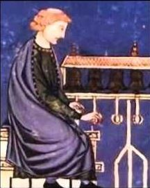
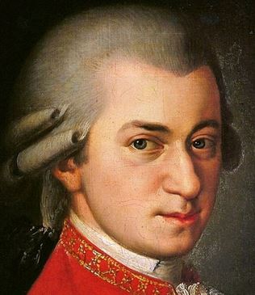

Adam de la Halle
(1240-1288)
Adam de la Halle
(1240-1288)
Adam de la Halle, originaire de France au XIIIe siècle, est
célèbre pour ses compositions médiévales, notamment ses motets et
ses pièces de jonglerie.
 Hildegard von Bingen
(1098-1179)
Hildegard von Bingen
(1098-1179)
Hildegard von Bingen, née en Allemagne, était une compositrice et
religieuse renommée pour ses œuvres sacrées au XIIe siècle.
 Pérotin (1160-1230)
Pérotin, un compositeur français du XIIe siècle, a contribué à
l'évolution de la musique polyphonique à l'école de Notre-Dame de
Paris.
 Loyset Compère (1445-1628)
Loyset Compère (1445-1628)
Loyset Compère, un compositeur franco-flamand de la Renaissance,
est connu pour ses messes et chansons polyphoniques, contribuant
significativement à l'évolution de la musique sacrée et profane.
 Josquin des Prez
(1450-1519)
Josquin des Prez
(1450-1519)
Josquin des Prez, un maître de la musique polyphonique de la
Renaissance, est célèbre pour son habileté à intégrer des éléments
textuels et musicaux, notamment dans ses messes et motets.
 Eustache Du Caurroy
(1549-1609)
Eustache Du Caurroy
(1549-1609)
Eustache Du Caurroy, compositeur français de la Renaissance, est
reconnu pour ses messes polyphoniques et ses "Fantaisies".
 John Bull (1562-1628)
John Bull (1562-1628)
John Bull était un compositeur et claviériste anglais, célèbre
pour ses œuvres complexes pour clavier.
 Antonio Vivaldi (1678-1741)
Antonio Vivaldi (1678-1741)
Antonio Vivaldi, né en Italie en 1678 et décédé en 1741, était un
compositeur et violoniste renommé de l'époque baroque. Il est
célèbre pour ses concertos, notamment les célèbres Quatre Saisons,
qui démontrent sa virtuosité au violon et son innovation dans le
domaine du concerto.
 Johann Sebastian Bach
(1685-1750)
Johann Sebastian Bach
(1685-1750)
Johann Sebastian Bach, né en Allemagne en 1685 et décédé en 1750,
était un compositeur, organiste et violoniste de renom. Il est
célèbre pour ses compositions polyphoniques et ses œuvres pour
orgue, qui représentent le sommet de la musique baroque.
 Jean-Philippe Rameau
(1683-1764)
Jean-Philippe Rameau
(1683-1764)
Jean-Philippe Rameau, né en France en 1683 et décédé en 1764,
était un compositeur, organiste et théoricien de la musique. Il
est célèbre pour ses opéras et ses traités sur la musique, qui ont
influencé le développement de la musique occidentale.
 Jean-Baptiste Lully
(1632-1687)
Jean-Baptiste Lully
(1632-1687)
Jean-Baptiste Lully, né en Italie en 1632 et décédé en 1687, était
un compositeur et chef d'orchestre français d'origine italienne.
Il est célèbre pour ses tragédies lyriques, qui ont établi les
fondements de l'opéra français.
 Arcangelo Corelli
(1653-1713)
Arcangelo Corelli
(1653-1713)
Arcangelo Corelli, né en Italie en 1653 et décédé en 1713, était
un violoniste et compositeur baroque italien. Il est célèbre pour
ses concertos grosso, qui ont influencé le développement du style
concertant.
 Domenico Scarlatti
(1685-1757)
Domenico Scarlatti
(1685-1757)
Domenico Scarlatti, né en Italie en 1685 et décédé en 1757, était
un compositeur et claveciniste italien. Il est célèbre pour ses
sonates pour clavier, qui sont parmi les œuvres les plus
importantes du répertoire pour clavecin.
 Muzio Clementi (1752-1832)
Muzio Clementi (1752-1832)
Muzio Clementi (1752-1832), compositeur et pianiste italien, est
reconnu comme le "Père du pianoforte" pour ses innovations
techniques et ses sonates influentes qui ont profondément marqué
la littérature pianistique classique.
 Wolfgang Amadeus Mozart (1756-1791)
Wolfgang Amadeus Mozart (1756-1791) : Compositeur autrichien,
célèbre pour ses œuvres musicales variées et son génie musical
précoce. Jouait du piano et du violon.
 Christoph
Willibald Gluck (1714-1787)
Christoph
Willibald Gluck (1714-1787)
Christoph Willibald Gluck (1714-1787) : Compositeur allemand,
Gluck est célèbre pour sa réforme de l'opéra, cherchant à unifier
musique et drame pour une expression plus naturelle, notamment
dans des œuvres comme "Orfeo ed Euridice".
 Ludwig van Beethoven
(1770-1827)
Ludwig van Beethoven
(1770-1827)
Ludwig van Beethoven (1770-1827) : Compositeur allemand, connu
pour ses symphonies émotionnelles et son innovation artistique.
Jouait du piano.
 Luigi Boccherini
(1743-1805)
Luigi Boccherini
(1743-1805)
Luigi Boccherini (1743-1805) était un violoncelliste et
compositeur italien célèbre pour sa musique de chambre, notamment
le "Menuet" du Quintette en mi majeur, qui symbolise l'élégance du
style classique.
 Joseph Haydn (1732-1809)
Joseph Haydn (1732-1809)
Joseph Haydn (1732-1809) : Compositeur autrichien, pionnier de la
symphonie et du quatuor à cordes.
Antonio Salieri (1750-1825)
Antonio Salieri (1750-1825), compositeur italien célèbre pour ses
opéras et son rôle influent en tant que maître de chapelle à
Vienne. Bien qu'il n'ait pas été associé à un instrument
spécifique, il était reconnu pour son enseignement à des musiciens
de renom.
 Felix Mendelssohn
(1809-1847)
Felix Mendelssohn
(1809-1847)
Felix Mendelssohn, né en Allemagne au début du XIXe siècle, était
un compositeur et chef d'orchestre prolifique, célèbre pour son
mariage harmonieux entre les styles classique et romantique.
 Frédéric Chopin (1810-1849)
Frédéric Chopin (1810-1849)
Frédéric Chopin, d'origine polonaise, était un virtuose du piano
du début du XIXe siècle. Il est célèbre pour ses compositions pour
piano solo, qui ont redéfini le genre.
 Robert Schumann (1810-1856)
Robert Schumann (1810-1856)
Robert Schumann, également allemand du XIXe siècle, était un
compositeur et un critique musical influent, célèbre pour ses
œuvres pour piano et ses cycles de lieder.
Franz Liszt (1811-1886)
Franz Liszt, hongrois du XIXe siècle, était un pianiste virtuose
et un compositeur révolutionnaire. Il a popularisé le récital de
piano en solo et a introduit de nouvelles techniques de jeu.
 Richard Wagner (1813-1883)
Richard Wagner (1813-1883)
Richard Wagner (1813-1883), compositeur allemand, est célèbre pour
ses opéras épiques et son concept d'œuvre d'art totale. Bien qu'il
ait été un innovateur en composition, il n'est pas spécifiquement
associé à un seul instrument mais à la direction d'orchestre.
 Franz Schubert (1797-1828)
Franz Schubert (1797-1828)
Franz Schubert, autrichien du début du XIXe siècle, était un
maître de la mélodie et un compositeur prolifique de lieder et de
musique de chambre.
 Johannes Brahms (1833-1897)
Johannes Brahms (1833-1897)
Johannes Brahms (1833-1897), compositeur allemand, est renommé
pour sa rigueur structurelle et sa riche contribution à la musique
de chambre et symphonique. Il était également un pianiste
accompli.
 Claude Debussy (1862-1918)
Claude Debussy (1862-1918)
Claude Debussy (1862-1918) : Compositeur français, célèbre pour
son impressionnisme musical novateur. Il était un virtuose du
piano et a révolutionné la musique avec des œuvres telles que
"Clair de Lune" et "La Mer".
 Erik Satie (1866-1925)
Erik Satie (1866-1925)
Erik Satie (1866-1925) : Compositeur français, célèbre pour son
minimalisme musical et son humour excentrique. Il était pianiste
et a créé des œuvres emblématiques telles que les "Gymnopédies" et
les "Gnossiennes".
 Darius Milhaud (1892-1974)
Darius Milhaud (1892-1974)
Darius Milhaud (1892-1974) : Compositeur français, célèbre pour
son éclectisme musical et son utilisation novatrice de rythmes
polytonaux. Il était un pianiste accompli et a créé des œuvres
comme "Le Bœuf sur le toit" et "La Création du monde".
 Arthur Honegger (1892-1955)
Arthur Honegger (1892-1955)
Arthur Honegger (1892-1955) : Compositeur suisse, connu pour ses
œuvres impressionnantes et puissantes, souvent inspirées par des
sujets dramatiques. Il était également un talentueux pianiste et a
composé des chefs-d'œuvre tels que "Pacific 231" et "Jeanne d'Arc
au bûcher".
 Maurice Ravel (1875-1937)
Maurice Ravel (1875-1937)
Maurice Ravel (1875-1937) : Compositeur français, connu pour sa
richesse harmonique et son orchestration exquise. Il excellait au
piano et a créé des œuvres emblématiques telles que "Boléro" et
"Daphnis et Chloé".
 Albert Roussel (1869-1925)
Albert Roussel (1869-1925)
Albert Roussel (1869-1925) : Compositeur français, reconnu pour
son style néo-classique et son utilisation innovante du
contrepoint. Il jouait du piano et a laissé un héritage musical
durable avec des compositions comme "Bacchus et Ariane".
 Georges Auric (1899-1963)
Georges Auric (1899-1963)
Georges Auric (1899-1963) : Compositeur français, célèbre pour ses
collaborations avec les Ballets Russes et sa musique de film. Il
jouait du piano et a créé des partitions inoubliables pour des
films tels que "La Belle et la Bête" et "Moulin Rouge".
 Francis Poulenc (1899-1963)
Francis Poulenc (1899-1963)
Francis Poulenc (1899-1963) : Compositeur français, connu pour son
style mélodique distinctif et son humour subtil. Il excellait au
piano et a composé des œuvres marquantes telles que "Les Biches"
et "Gloria".